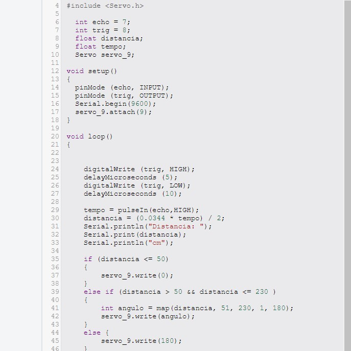

Objetivo
Controlar a rotação de um servo motor com base na distância medida por um sensor ultrassônico. O servo
motor se ajusta automaticamente de acordo com a proximidade de um objeto detectado pelo sensor.
Materiais Utilizados
Arduino Uno R3 (Placa microcontroladora)
Protoboard (Realizar as conexões sem necessidade de solda)
Servo Motor (Para realizar o movimento rotacional)
Sensor Ultrassônico HC-SR04 (Para medir a distância de objetos)
Jumpers (Fios de conexão)
Diagrama do Circuito
Este projeto usa um sensor ultrassônico HC-SR04 para medir a distância de um objeto e controlar o ângulo de
rotação de um servo motor. O servo ajusta sua posição de acordo com a distância detectada, proporcionando um
controle dinâmico do ângulo com base na leitura do sensor.
Código Fonte & Procedimento
Código em C++ utilizando a IDE do Arduino.
1- Conecte o sensor ultrassônico HC-SR04 ao Arduino utilizando os pinos 7 (Echo) e 8 (Trig).
2- Conecte o servo motor ao pino 9 do Arduino para controlar sua rotação.
3- No código, os pinos do sensor ultrassônico são configurados como input/output para enviar e receber
os pulsos ultrassônicos. O tempo de retorno do pulso é calculado com a função pulseIn().
4- A distância é calculada com base no tempo de retorno e convertida em centímetros.
5- Dependendo da distância:
Se a distância for menor ou igual a 50 cm, o servo se move para a posição 0°.
Se a distância estiver entre 51 cm e 230 cm, a função map() ajusta o ângulo do servo motor
proporcionalmente, movendo-o entre 1° e 180°.
Para distâncias acima de 230 cm, o servo se posiciona em 180°.
Resultados & Conclusão
Após carregar o código e montar o circuito, o sistema funcionou conforme esperado. O servo motor ajustou
seu ângulo de rotação com base na distância medida pelo sensor ultrassônico.
Este projeto demonstrou a integração de um sensor ultrassônico com um servo motor, permitindo que o movimento
rotacional do servo fosse controlado de acordo com a proximidade de objetos.